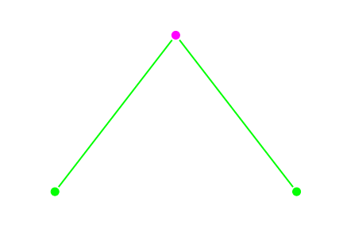
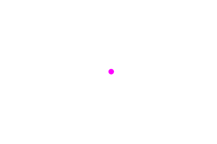
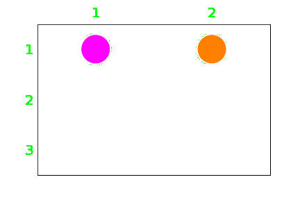
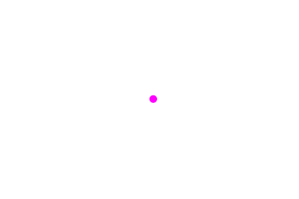
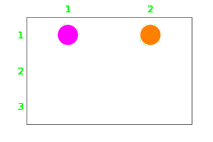
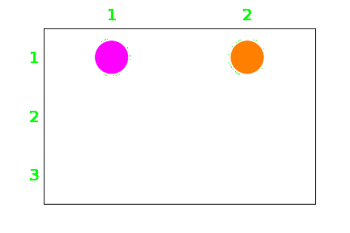
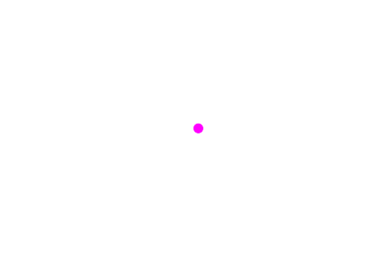

The problem of simple robot navigation involves N simple circular robots on a 2D m by n grid, an initial state specifying the initial position of the robots and a goal state specifying the final position of the robots.
Using various searching algorithms, the path from the initial to goal state will be found, without any robot exiting the grid, colliding or swapping places. Furthermore, the optimality, completeness, time complexity and space complexity of each algorithm will be compared.
The grid is represented by an m by n matrix in which each element is the x-y coordinate location of each cell in the grid.
Each robot is given an integer identifier j. The cell in which the jth robot is located is called a substate. The state of N robots is a list of all substates indexed by j in ascending order. Each robot j has a set of available actions which contain reachable or final substates after moving left, right, up or down by one unit on the grid, given its current or initial substate. The reachable states of N robots is a set of all valid states containing all possible combinations of reachable substates, given the current or initial state. This is called the successor set.

Not all substates and states are valid. The following restrictions apply: (1) robots move by one grid unit, (2) robots cannot exit the grid, (3) robots cannot collide or share position and (4) robots cannot swap places.

The problem is defined below in Python given an initial state, a goal state, m and n.
1 2 3 4 5 6 7 8 9 10 11 12 13 14 15 16 17 18 19 20 21 22 23 24 25 26 27 28 29 30 31 32 33 34 35 36 37 38 39 40 41 42 43 44 45 46 47 48 49 50 51 52 53 54 55 56 57 58 59 60 61 62 63 64 65 66 67 68 69 70 71 72 73 74 75 76 77 78 79 80 81 82 83 84 85 86 87 | class Problem : ''' +------------------------------------------------------------+ | N Robots on an m x n Grid | +------------+-----------------------------------------------+ | Substate j | Position of Robot j: ( xj, yj ) | +------------+-----------------------------------------------+ | State N | [ Substate 1, Substate 2, ..., Substate N ] | +------------+-----------------------------------------------+ | Actions ji | { Substate jf1, Substate jf2, ... } | +------------+-----------------------------------------------+ | Successor | { State Nf1, State Nf2, ... } | +------------+-----------------------------------------------+ | Conditions | (1) Robots move by one grid unit: | | | (a) xi - 1 <= xf <= xi + 1 | | | (b) yi - 1 <= yf <= yi + 1 | | | (2) Robots cannot exit the grid: | | | (a) 1 <= xj <= m | | | (b) 1 <= yj <= n | | | (3) Robots cannot collide or share position: | | | (a) Count( Substate j ) = 1. | | | (4) Robots cannot swap places: | | | (a) ( Substate ji, Substate ki ) | | | != ( Substate kf, Substate jf ); | | | (b) j < k. | +------------+-----------------------------------------------+ ''' def __init__( self, init, goal, m, n ) : self.m = m self.n = n self.init = init self.goal = goal self.robots = len( init ) def successor( self, state ) : ''' Generates set of reachable states from the current state ''' swap = set() # { ( Substate ji, Substate ki ), ... } # j < k. for j in range( self.robots ) : sub_ji = state[ j ] for sub_ki in state[ j + 1 : ] : swap.add( ( sub_ji, sub_ki ) ) acts = [] # Substates reachable to each # robot j, indexed by robot # Generating actions for each robot j for sub in state : acts_j = set() # (1) Robots move by one grid unit for act in [ 0, 1 , -1 ] : xi, yi = sub[ 0 ], sub[ 1 ] xf, yf = sub[ 0 ] + act, sub[ 1 ] + act # (2) Robot cannot move outside grid if 1 <= xf <= self.m and 1 <= yi <= self.n : acts_j.add( ( xf, yi ) ) if 1 <= xi <= self.m and 1 <= yf <= self.n : acts_j.add( ( xi, yf ) ) acts.append( acts_j ) succ = [] def combine( acts, j = 0, state_jf = [] ) : ''' Generates N nested for loops to combine all possible actions ''' if j == self.robots : # (4) Robots cannot swap places for j in range( self.robots ) : sub_jf = state_jf[ j ] for sub_kf in state_jf[ j + 1 : ] : # ( Substate ji, Substate ki ) # != ( Substate kf, Substate jf ) if ( sub_kf, sub_jf ) in swap : return # Break all loops return succ.append( tuple( state_jf ) ) for sub_kf in acts[ j ] : # (3) Robots cannot collide if sub_kf not in state_jf : combine( acts, j + 1, state_jf + [ sub_kf ] ) combine( acts ) return set( succ ) def goal_test( self, state ) : ''' True if the state is a goal. ''' self.state = state self.parent = None return state == self.goal |
To solve the problem using a search tree, the node and tree data structure should be defined. Tree structures are composed of nodes. A single node has a single parent node and one or more child nodes, for which it is the parent node. The branches extending from parent to child nodes create what looks like an upside down tree in which the root node is at the top. The root node is the only node that has no parent and represents the grandparent of all nodes in the tree. The degree of a node is the number of children of the node. The depth of the node is the number of parent nodes above it. Sibling nodes are nodes that share the same parent. Leaf nodes are the bottommost nodes, which have no children. The path of a node is its lineage to the root node.
For this problem, each node represents a state. The child nodes represent the states reachable from the parent node. The branch connecting the parent node to the child node represents the action taken. The initial state is the root node, and the goal state is a leaf node. The solution is the path from the root node to the leaf node representing the goal state.
This script defines a node which is used to create the tree. New parameters are the count and number. Number is the number of the node, which is used to uniquely identify it. This is necessary when graphing the tree, because reachable states can be repeated throughout the tree and cannot be used to uniquely identify the node. The count is the number of the node in relation to its siblings. This is used to determine the horizontal position of the node in the tree when graphing. The path cost will be explained later.
1 2 3 4 5 6 7 8 9 10 11 12 13 14 15 16 17 18 19 20 21 22 23 24 25 26 27 28 29 30 31 32 33 34 35 36 37 38 39 40 41 42 43 44 45 46 47 | class Node : def __init__( self, state, parent = None, children = 0, pathcost = 0, count = 0, number = 0 ) : ''' Create a search tree node ''' self.state = state self.parent = parent self.children = children self.pathcost = pathcost self.count = count self.number = number def reverse( self, l ) : return l[ ::-1 ] def lineage( self, child ) : ''' Generates the product of the count of all parent nodes and their children, used to contrict the spread of the lower branches of the tree when graphing ''' n = 1 while child.parent : parent = child.parent n *= parent.children child = parent return n def path( self, child ) : ''' Returns dictionary storing chosen states and the identifiers for the chosen nodes ''' path = { 'path' : [ child.state ], 'number' : [ child.number ] } while child.parent : parent = child.parent path[ 'path' ].append( parent.state ) path[ 'number' ].append( parent.number ) child = parent path[ 'path' ] = self.reverse( path[ 'path' ] ) path[ 'number' ] = self.reverse( path[ 'number' ] ) return path |
Graphing and animating the search process is used to visualize how the algorithms work. This class generates a png of the search tree and the current path of the robot on the grid, given a node. The tree and path are generated incrementally with each node processed. The png files are then turned into a gif animation outside of Python.
1 2 3 4 5 6 7 8 9 10 11 12 13 14 15 16 17 18 19 20 21 22 23 24 25 26 27 28 29 30 31 32 33 34 35 36 37 38 39 40 41 42 43 44 45 46 47 48 49 50 51 52 53 54 55 56 57 58 59 60 61 62 63 64 65 66 67 68 69 70 71 72 73 74 75 76 77 78 79 80 81 82 83 84 85 86 87 88 89 90 91 92 93 94 95 96 97 98 99 100 101 102 103 104 105 106 107 108 109 110 111 112 113 114 115 116 117 118 119 120 121 122 123 124 125 126 127 | import matplotlib.pyplot as plt import matplotlib.patheffects as pe class Graph : def __init__( self ) : self.graph = [] self.coord = {} def grid( self, node, m, n ) : ''' Graphs the path on a grid ''' # Getting path to state path = node.path( node )[ 'path' ] coords = [ [] for rj in range( len( path[ 0 ] ) ) ] for state in path : j = 0 for rj_loc in state : xj, yj = rj_loc[ 0 ], n + 1 - rj_loc[ 1 ] coords[ j ].append( ( xj, yj ) ) j += 1 plt.clf() # Clear current figure # Robot colors color = [ '#FF00FF', '#FF8000', '#DD0000', '#02FF02', '#5E5EFF', '#FF69B4' ] # Plotting the path to state j = 0 for rj in coords : path = list( zip( *rj ) ) plt.plot( *path, marker = 'o', color = color[ j % 6 ], alpha = 0.5, linewidth = 10, markersize = 40 ) j += 1 effect = [ pe.Stroke( linewidth = 5, foreground = 'white' ), pe.Normal() ] # Plotting each robot's location j = 0 for rj in node.state : xj, yj = rj[ 0 ], n + 1 - rj[ 1 ] plt.plot( xj, yj, marker = 'o', color = color[ j % 6 ], markersize = 40, path_effects = effect ) j += 1 plt.grid( b = True, color = 'white', linewidth = 5 ) ax = plt.gca() ax.set_xticks( [ i for i in range( 1, m + 1 ) ], minor = True ) ax.set_xticklabels( [ str( i ) for i in range( 1, m + 1 ) ], minor = True ) ax.set_yticks( [ i for i in range( 1, n + 1 ) ], minor = True) ax.set_yticklabels( [ str( i ) for i in range( n, 0, -1 ) ], minor = True ) ax.set_xticks( [ i + 0.5 for i in range( m + 1 ) ], minor = False ) ax.set_yticks( [ i + 0.5 for i in range( n + 1 ) ], minor = False ) ax.tick_params( color = 'none', labelcolor = '#02FF02', labelsize = 20, labeltop = True, labelbottom = False, which = 'minor' ) ax.tick_params( colors = 'none', which = 'major' ) ax.set_facecolor( 'none' ) plt.savefig( 'grid{}.png'.format( node.number ), dpi = 'figure', orientation = 'landscape', transparent = True ) def tree( self, node ) : ''' Graphs the tree ''' # Retrieving parent coordinate if node.parent : xp, yp = self.coord[ node.parent.number ] # Generating child coordinate breadth = node.parent.children yc = yp - 1 xc = node.count + 0.5 - breadth / 2 \ if breadth % 2 == 0 \ else node.count - breadth // 2 xc = xp + xc / node.lineage( node ) else : xc, yc = 0, 0 xp, yp = 0, 0 self.coord[ node.number ] = ( xc, yc ) # Retrieving path coordinates path = node.path( node ) lbls = [ str( list( state ) ) for state in path[ 'path' ] ] path = [ self.coord[ num ] for num in path[ 'number' ] ] pack = list( zip( *path ) ) # Plotting the tree effect = [ pe.Stroke( linewidth = 5, foreground = 'white' ), pe.Normal() ] # Generating branch branch = [ ( xp, yp ), ( xc, yc ) ] branch = list( zip( *branch ) ) self.graph.extend( branch ) plt.clf() # Clear current figure plt.plot( *self.graph, color = '#02FF02', marker = 'o', linewidth = 2, markersize = 10, path_effects = effect ) # Highlighting path plt.plot( *pack, color = '#FF00FF', marker = 'o', linewidth = 2, markersize = 10, path_effects = effect ) # Generating text for i in range( len( path ) ): xl, yl = path[ i ] plt.text( xl, yl + 0.5, lbls[ i ], color = 'white', fontsize = 15, bbox = dict( alpha = 0.9, facecolor = '#454545', edgecolor = 'none', boxstyle = 'round' ), verticalalignment = 'center', horizontalalignment = 'center' ) plt.axis( 'off' ) plt.grid( b = None ) plt.savefig( 'tree{}.png'.format( node.number ), dpi = 'figure', orientation = 'landscape', transparent = True ) |
This algorithm explores all of the nodes at the present depth prior to moving on to the next depth. In other words, breadth-first search explores paths of length 1 first, then all those of length 2, and so on. Therefore, if a solution exists, breadth-first search will find the shallowest goal state first, making it complete and optimal. However, beadth-first search has an exponential time and space complexity bound, which means it is only practical for simple problems.
The algorithm is written using the classes above. A list containing explored nodes is used to avoid infinite loops, which can occur if a child node is identical to any of its parent nodes. The frontier contains all of the nodes to be expanded as a first-in-first-out (FIFO) queue.
1 2 3 4 5 6 7 8 9 10 11 12 13 14 15 16 17 18 19 20 21 22 23 24 25 26 27 | def breadth_first_search( init, goal, m, n ) : graph = Graph() problem = Problem( init, goal, m, n ) if problem.goal_test( init ) : return init count = 0 identity = 0 frontier = [ Node( init ) ] explored = [] while True : if frontier == [] : return 'Failure' node = frontier.pop( 0 ) # FIFO queue graph.tree( node ) graph.grid( node, m, n ) if problem.goal_test( node.state ) : return # We're done explored.append( node.state ) for state in problem.successor( node.state ) : child = Node( state, parent = node ) if child.state not in explored : identity += 1 node.children += 1 child.count = count child.number = identity frontier.append( child ) count += 1 count = 0 |
With only 1 robot on a 4 by 4 grid with an initial state [ ( 1, 1 ) ] and a goal state [ ( 4, 4 ) ],
breadth-first search finds the path
[ ( 1, 1 ) ] → [ ( 1, 2 ) ] → [ ( 2, 2 ) ] → [ ( 3, 2 ) ] → [ ( 3, 3 ) ] → [ ( 4, 3 ) ] → [ ( 4, 4 ) ].

The search process and path is animated below. The violet portion of the search tree shows the current path. The current path of the robot is also animated on the grid to the right of the tree. Even for a simple example like this, the tree generates a depth of 6 and 50 nodes before finding a solution.

With 2 robots on a 2 by 3 grid with an initial state [ ( 1, 1 ), ( 2, 1 ) ] and a goal state [ ( 2, 3 ), ( 1, 3 ) ],
breadth-first search finds the path
[ ( 1, 1 ), ( 2, 1 ) ] → [ ( 2, 1 ), ( 2, 2 ) ] → [ ( 2, 2 ), ( 2, 3 ) ] → [ ( 2, 3 ), ( 1, 3 ) ].

The search process and path is animated below. On the grid to the right of the tree, the path of robot 1 is highlighted in violet and the path of robot 2 is highlighted in orange. However, the solution is a single path containing both robots. The tree is shallower due to a shorter path length, but generates 94 nodes before finding a solution. Due to the exponential time and space complexity of breadth-fist search, more complicated examples will not be entertained.

This alogirthm explores the deepest level of the tree first. When the search hits a leaf node, it backtracks up the tree and expands a shallower level node to the deepest level, and so on. Depth-first search has an exponential time complexity bound but may be faster than breadth-first search if the correct node is chosen at the start of the search, or if there are many solutions in the tree. Its space complexity is the product of the number of branches and depth of the tree. Depth-first search is not complete, because it may not find a solution if the node it chooses to expand leads to an infinite or very deep leaf node. It is also not optimal, because it does not garantee the shallowest goal state.
The script is identical to breadth-fist search except the frontier is a last-in-first-out (LIFO) queue.
1 2 3 4 5 6 7 8 9 10 11 12 13 14 15 16 17 18 19 20 21 22 23 24 25 26 27 | def depth_first_search( init, goal, m, n ) : graph = Graph() problem = Problem( init, goal, m, n ) if problem.goal_test( init ) : return init count = 0 identity = 0 frontier = [ Node( init ) ] explored = [] while True : if frontier == [] : return 'Failure' node = frontier.pop( -1 ) # LIFO queue graph.tree( node ) graph.grid( node, m, n ) if problem.goal_test( node.state ) : return # We're done explored.append( node.state ) for state in problem.successor( node.state ) : child = Node( state, parent = node ) if child.state not in explored : identity += 1 node.children += 1 child.count = count child.number = identity frontier.append( child ) count += 1 count = 0 |
With only 1 robot on a 4 by 4 grid with an initial state [ ( 1, 1 ) ] and a goal state [ ( 4, 4 ) ],
depth-first search finds the path
[ ( 1, 1 ) ] → [ ( 2, 1 ) ] → [ ( 3, 1 ) ] → [ ( 4, 1 ) ] → [ ( 4, 2 ) ] → [ ( 4, 3 ) ] → [ ( 4, 4 ) ].

The search process and path is animated below. The search explored only 7 nodes before finding a solution. This solution is also optimal, because it is at the same depth as the shallowest goal state. The tree has many optimal solutions, which makes depth-first search a good algorithm with 1 robot.

With 2 robots on a 2 by 3 grid with an initial state [ ( 1, 1 ), ( 2, 1 ) ] and a goal state [ ( 2, 3 ), ( 1, 3 ) ],
depth-first search finds the path
[ ( 1, 1 ), ( 2, 1 ) ] → [ ( 1, 2 ), ( 2, 2 ) ) → [ ( 1, 1 ), ( 2, 2 ) ] → [ ( 2, 1 ), ( 2, 2 ) ] → [ ( 2, 1 ), ( 2, 3 ) ]
→ [ ( 2, 1 ), ( 1, 3 ) ] → [ ( 1, 1 ), ( 1, 3 ) ] → [ ( 1, 2 ), ( 1, 3 ) ] → [ ( 2, 2 ), ( 1, 2 ) ] → [ ( 2, 1 ), ( 1, 1 ) ]
→ [ ( 2, 1 ), ( 1, 2 ) ] → [ ( 2, 2 ), ( 1, 3 ) ] → [ ( 2, 2 ), ( 2, 3 ) ] → [ ( 1, 2 ), ( 2, 3 ) ] → [ ( 1, 3 ), ( 2, 3 ) ]
→ [ ( 1, 3 ), ( 2, 2 ) ] → [ ( 2, 3 ), ( 2, 1 ) ] → [ ( 1, 3 ), ( 2, 1 ) ] → [ ( 1, 2 ), ( 1, 1 ) ] → [ ( 1, 3 ), ( 1, 1 ) ]
→ [ ( 2, 3 ), ( 1, 1 ) ] → [ ( 2, 2 ), ( 2, 1 ) ] → [ ( 2, 2 ), ( 1, 1 ) ] → [ ( 2, 3 ), ( 1, 2 ) ] → [ ( 1, 3 ), ( 1, 2 ) ]
→ [ ( 2, 3 ), ( 1, 3 ) ].
The search process and path is animated below. Although only 26 nodes were generated to find a solution, the path is far from optimal.
 

This algorithm chooses nodes that are determined to be closest to the goal state by a heuristic to expand first. The value of the heuristic for any node is called the pathcost for that node. The goal state should have a heuristic of zero. This algorithm finds solutions quickly, but does not always find the optimal solution. Like depth-first search, the algorithm tends to follow a single path all the way to the goal and backtracks up the tree and expands shallower nodes when it hits a dead end. Additionally, like depth-first search, greedy search is not complete or optimal for the same reasons. Greedy search tends to significantly prune the search tree but has an exponential time and space complexity bound.
The script is identical to depth-fist search except the frontier is a priority queue that chooses nodes with the minimum pathcost to expand. The pathcost is determined by a heuristic function that calculates the modulus of the difference between a state and the goal state.
1 2 3 4 5 6 7 8 9 10 11 12 13 14 15 16 17 18 19 20 21 22 23 24 25 26 27 28 29 30 31 32 33 34 35 36 37 | def greedy_search( init, goal, m, n ) : def heuristic( state, goal ) : h = 0 for i in range( len( state ) ) : rj_loc, rj_goal = state[ i ], goal[ i ] xj, yj = rj_loc[ 0 ], rj_loc[ 1 ] xg, yg = rj_goal[ 0 ], rj_goal[ 1 ] h += ( ( xj - xg )**2 + ( yj - yg )**2 )**0.5 return h graph = Graph() problem = Problem( init, goal, m, n ) if problem.goal_test( init ) : return init count = 0 identity = 0 frontier = [ Node( init, pathcost = heuristic( init, goal ) ) ] explored = [] while True : if frontier == [] : return 'Failure' cost = list( map( lambda node : node.pathcost, frontier ) ) node = frontier.pop( cost.index( min( cost ) ) ) # Priority queue graph.tree( node ) graph.grid( node, m, n ) if problem.goal_test( node.state ) : return # We're done explored.append( node.state ) for state in problem.successor( node.state ) : child = Node( state, parent = node ) if child.state not in explored : identity += 1 node.children += 1 child.count = count child.number = identity child.pathcost = heuristic( child.state, goal ) frontier.append( child ) count += 1 count = 0 |
With only 1 robot on a 4 by 4 grid with an initial state [ ( 1, 1 ) ] and a goal state [ ( 4, 4 ) ],
greedy search finds the path
[ ( 1, 1 ) ] → [ ( 1, 2 ) ] → [ ( 2, 2 ) ] → [ ( 3, 2 ) ] → [ ( 3, 3 ) ] → [ ( 4, 3 ) ] → [ ( 4, 4 ) ].

The search process and path is animated below. Like depth-first search the algorithm finds an optimal solution after exploring only 7 nodes.

With 2 robots on a 2 by 3 grid with an initial state [ ( 1, 1 ), ( 2, 1 ) ] and a goal state [ ( 2, 3 ), ( 1, 3 ) ],
greedy search finds the path
[ ( 1, 1 ), ( 2, 1 ) ] → [ ( 1, 2 ), ( 2, 2 ) ] → [ ( 1, 3 ), ( 1, 2 ) ] → [ ( 2, 3 ), ( 1, 3 ) ].

The search process and path is animated below. Unlike depth-first search, the greedy search finds an optimal solution after exploring only 4 nodes. Because of the speed of this algorithm, more complex examples can be entertained.
